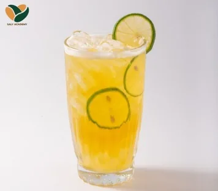
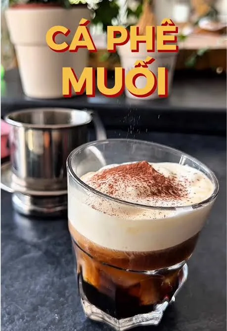
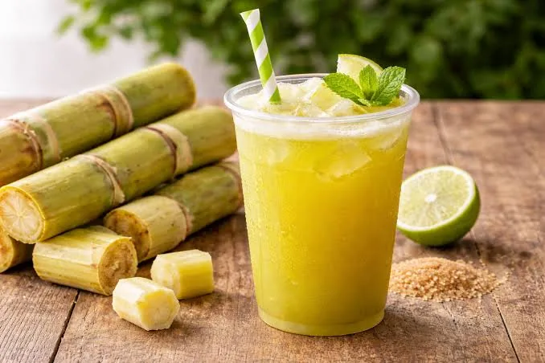
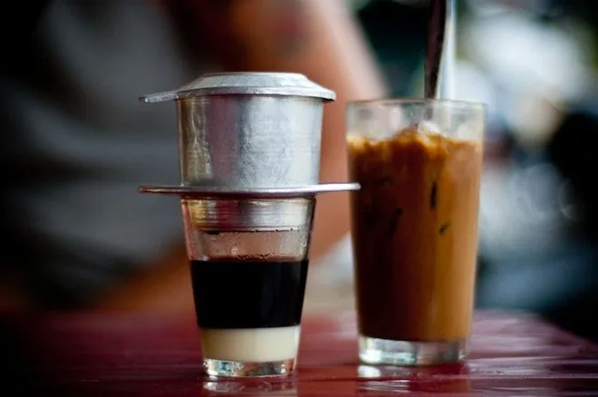
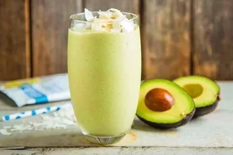
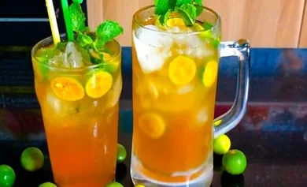
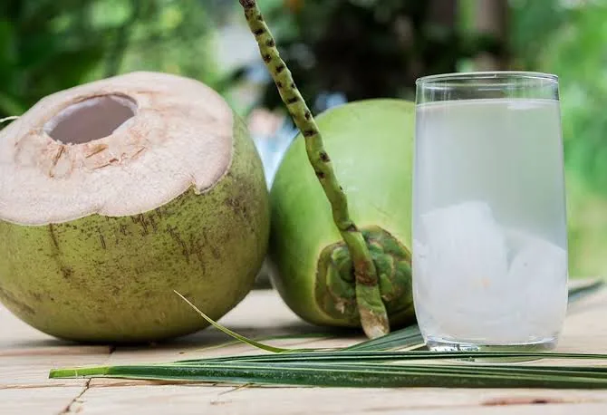

Cà phê trứng
Café à l’œuf
- Dans l’assiette
- Café robusta, jaune d’œuf, lait concentré sucré, sucre
- Origine
- Hà Nội
On a pas le goût de l'œuf, tu as l'impression d'avoir un café avec de la crème. C'est très bon mais bourratif
VIETNAM BELLY TOUR
Cafés, thés et boissons fraîches emblématiques.
Café à l’œuf
On a pas le goût de l'œuf, tu as l'impression d'avoir un café avec de la crème. C'est très bon mais bourratif

Thé glacé au citron vert
Easy-win
Bière pression légère
Peux rien dire dessus perso. Bia = Bière

Café salé
Ca surprend, c'est plutôt bon. Peu devenir un peu usant à boire sur la fin

Jus de canne à sucre
J'ai plein de souvenirs avec cette boisson. Tu repères vites les vendeurs car ils pressent directement les cannes devant toi sur leur stand. C'est très frais, sucré mais pas trop. La base des bases comme boisson

Café glacé au lait concentré
C'est à toi de me le présenter je dirais

Smoothie à l’avocat
Dès que tu vois "Sinh to" = smoothie. Bo = avocat. Les avocats VN sont plus gros. La boisson est légère en goût mais la texture est compacte, presque comme une glace. J'aime beaucoup

Thé glacé au kumquat
Ma maman en fait souvent donc t'as sûrement déjà goûté !! C'est plus léger que de l'orange mais plus goutu que du citron. Un de mes favs!

Eau de coco fraîche
Ca n'a pas le même gout du tout que la "coco" en FR. Excellent pour la digestion / dégonfler
Aucun résultat pour cette recherche.